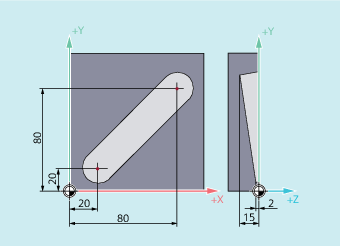

With G1 the tool travels on paraxial, inclined or straight lines arbitrarily positioned in space. Linear interpolation permits machining of 3D surfaces, grooves, etc.
| Linear interpolation with feedrate (linear interpolation) |
| End point in Cartesian coordinates |
| End point in polar coordinates, in this case polar angle |
| End point in polar coordinates, in this case polar radius |
| Feedrate speed in mm/min. The tool travels at feedrate F along a straight line from the current starting point to the programmed destination point. You can enter the destination point in Cartesian or polar coordinates. The workpiece is machined along this path. Example: The end point on X, Y, Z is approached at a feedrate of 100 mm/min; the rotary axis A is traversed as a synchronized axis, ensuring that all four movements are completed at the same time. |
| Note |
Spindle speed Axis groups, for which path feedrate |
The tool travels from the starting point to the end point in the X/Y direction. Infeed takes place simultaneously in the Z direction.
| Program code | Comment |
|---|---|
| N10 G17 S400 M3 | ; Selection of the working plane, spindle clockwise |
| N20 G0 X20 Y20 Z2 | ; Approach the starting position |
| N30 G1 Z-2 F40 | ; Tool infeed |
| N40 X80 Y80 Z-15 | ; Travel on an inclined line |
| N50 G0 Z100 M30 | ; Retraction for tool change |
| Program code | Comment |
|---|---|
| N10 G17 S400 M3 | ; Selection of the working plane, spindle clockwise |
| N20 G0 X40 Y-6 Z2 | ; Approach the starting position |
| N30 G1 Z-3 F40 | ; Tool infeed |
| N40 X12 Y-20 | ; Travel on an inclined line |
| N50 G0 Z100 M30 | ; Retraction for tool change |